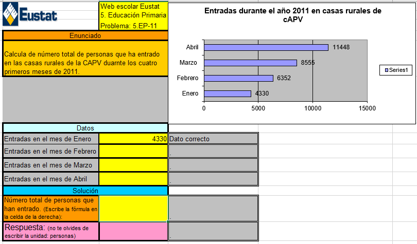
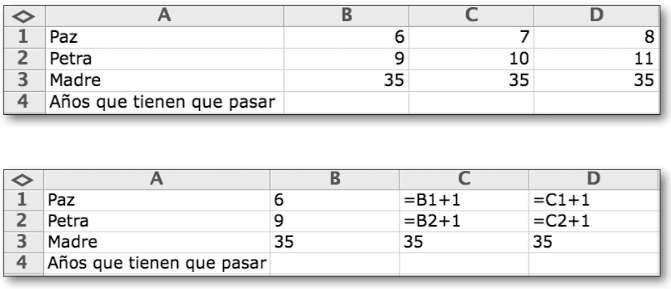
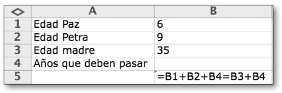
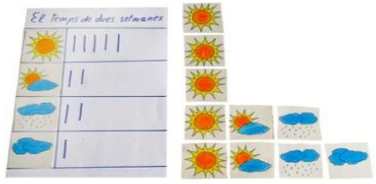
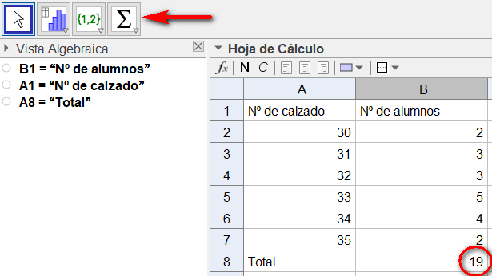
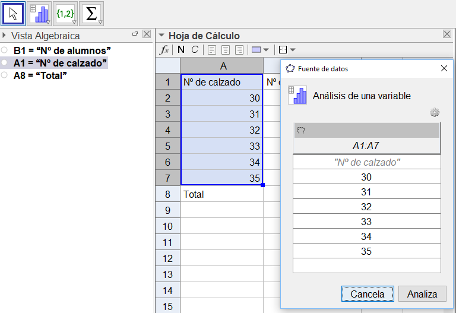
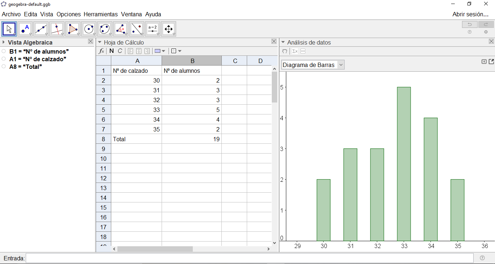
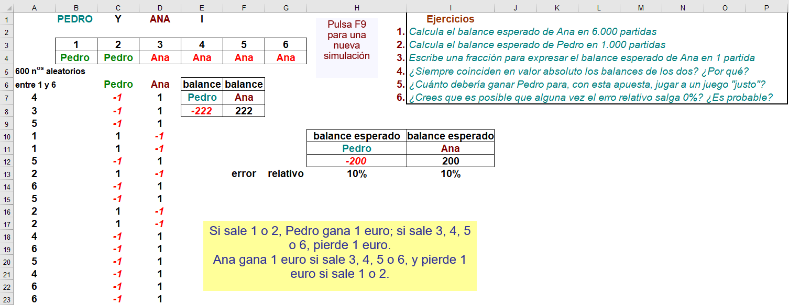

La hoja de cálculo
En módulos anteriores hemos visto que la hoja de cálculo (HC) puede usarse como cuaderno del profesor y para echar unas cuentas de vez en cuando. Sin embargo, la hoja de cálculo es, en sí misma, un recurso ampliamente utilizado en las aulas y sobre el que se ha investigado en profundidad. Algunas de estas experiencias didácticas incluyen la resolución algebraica de problemas con el apoyo de la hoja de cálculo, como entorno de trabajo, aunque hay que tener en cuenta ciertas limitaciones y, desde luego, es innegable su potencial en estadística.
Utilización de la hoja de cálculo ya en primaria
No debemos encasillar a un instrumento como la hoja de cálculo en una etapa determinada. No dejan de ser una serie de casillas o celdas que podemos relacionar y un entorno donde podemos manipular esos datos y representarlos gráficamente. La experiencia que relata Crespo (2012) se desarrolla, precisamente, con alumnos de 5º y 6º de primaria y, para ello, prepararon una serie de hojas semiestructuradas sobre las que trabajar la resolución de problemas. Vemos un ejemplo en la figura siguiente:

Crespo reconoce que una de las limitaciones es la rigidez inherente a la estructuración de estas hojas ya preparadas. No en vano, si algo caracteriza a la resolución de problemas de verdad, y al tratamiento de los problemas auténticos, es precisamente que deben abordarse de forma abierta. No se trata simplemente de identificar los datos, la fórmula a aplicar y ejecutar las operaciones, sino que se deben relacionar los datos entre sí, establecer hipótesis, etc.
En cualquier caso, no es una mala idea que las primeras veces que utilicemos la hoja de cálculo, lo hagamos con una hoja semiestructurada. De esta manera, ejemplificamos una forma de resolver problemas y los alumnos pueden probar a insertar fórmulas en las celdas, arrastrar valores, etc.
Un ejemplo: problema de divisibilidad (mcm)
En el capítulo dedicado a Geogebra se explica cómo abordar un problema de divisibilidad con la hoja de cálculo.
Enlace con el álgebra, una experiencia de investigación
Método cartesiano
Vamos a exponer ahora una forma de utilizar la hoja de cálculo, a partir de una investigación (Arnau & Puig, 2013) que tenía el objetivo de estudiar qué sucede cuando se enseña a resolver problemas aritmético-algebraicos de enunciado verbal en este entorno, usando un modelo de enseñanza que pretende que los alumnos acaben siendo competentes en la resolución algebraica de problemas mediante el método cartesiano (MC). El método cartesiano es la manera en la que habitualmente se introduce la resolución algebraica de problemas en los textos de álgebra. Presentamos el MC desglosado en una secuencia ordenada de pasos:
- Una lectura analítica del enunciado del problema que lo reduce a una lista de cantidades y de relaciones entre cantidades.
- Elección de una cantidad que se va a representar con una letra (o de unas cuantas cantidades que se van a representar con letras distintas).
- Representación de otras cantidades mediante expresiones algebraicas que describen la relación (aritmética) que esas cantidades tienen con otras que ya han sido previamente representadas por una letra o una expresión algebraica.
- Establecimiento de una ecuación (o tantas como letras distintas se haya decidido introducir en el segundo paso) igualando dos expresiones, de las que se han escrito en el tercer paso, que representen la misma cantidad.
- Transformación de la ecuación en una forma canónica.
- Aplicación de la fórmula o algoritmo de solución a la ecuación en forma canónica
- Interpretación del resultado de la ecuación en términos del problema.
Como vemos, es el procedimiento habitual cuando se introducen las ecuaciones en educación secundaria. Y se espera que nuestros alumnos sean competentes en él.
Resolución algebraica en la hoja de cálculo
En su trabajo, Arnau y Puig diseñaron una secuencia didáctica para enseñar a resolver problemas de manera algebraica que hace uso de la hoja de cálculo, teniendo en cuenta que el objetivo era la competencia en el MC. Así, lo que se realizara con la hoja de cálculo era un mero paso, algo que sería abandonado más adelante. Su premisa de partida es que el MC comparte elementos comunes con una manera de resolver los problemas en la hoja de cálculo que denominan método de resolución algebraico en la hojade cálculo (MHC). Los pasos ideales del MHC son:
- Una lectura analítica del enunciado del problema que lo reduce a una lista de cantidades y de relaciones entre cantidades.
- La asignación de una celda a una o varias cantidades desconocidas y la elección de una única cantidad desconocida representada en una celda de la que dependerán directa o indirectamente el resto de cantidades desconocidas representadas. A esta cantidad la llamaremos «cantidad de referencia» y a la celda que ocupa, «celda de referencia».
- La asignación a todas las cantidades desconocidas (exceptuando la cantidad de referencia) de una fórmula mediante la que se expresa una relación con otras cantidades.
- El establecimiento de una ecuación, lo que se hace igualando dos expresiones que representan la misma cantidad. Por ejemplo, tal y como
- La variación del valor de la cantidad de referencia hasta conseguir que se verifique la igualdad.
- La interpretación del valor que verifica la igualdad en términos del problema.
Hay pasos que pueden realizarse de diferente forma. Para su investigación, Arnau y Puig, optaron en el paso 4 por asignar dos celdas a una misma cantidad y comparar sus valores, en lugar de construir la ecuación, mediante una fórmula del tipo =B1=B2, que proporciona resultado VERDADERO, si los valores presentes en B1 y B2 coinciden, o FALSO en caso contrario.
Por otro lado, para el paso 5 eligieron generar una secuencia de valores en la fila en la que se encontraba la celda de referencia, y copiar entonces el contenido del resto de celdas mediante copia y pegado por arrastre, frente a la técnica de hacer variar el valor presente en la celda de referencia.
Ejemplos de problemas
Paz, Petra y su madre
Paz y Petra tienen 6 y 9 años respectivamente. Su madre, Ana, tiene 35 años. ¿Cuántos años deben pasar para que, entre las dos niñas, igualen la edad de la madre?
Resolución mediante líneas de vida (no es MHC):

Observemos que la resolución que muestra la figura anterior se desmarca de los pasos propios del MHC y, por tanto, de la resolución algebraica mediante el MC. Una resolución correcta mediante el MHC sería de la siguiente forma:

Ejercicios
A modo de ejercicio, sugerimos otros dos problemas que aparecen en la investigación de Arnau y Puig (2013):
Lana y algodón
Se dispone de tela de lana y de tela de algodón. En total 12 metros. El precio del metro de lana es de 2 euros y el de algodón, de 4 euros. El valor total de la tela que se dispone es de 32 euros. ¿De cuántos metros de tela de lana y de cuántos metros de tela de algodón se dispone?
Las ovejas
En una granja hay 180 ovejas en dos corrales. Si sabemos que en uno de ellos hay 30 ovejas más que en el otro, ¿cuántas ovejas hay en cada corral?
Estadística básica con la hoja de cálculo
Para mostrar una aplicación sencilla de la hoja de cálculo con fines estadísticos pensemos en seguir
Hay proyectos muy interesantes que cultivan la estadística desde la educación infantil. Por ejemplo, anotando en la pizarra los días que sale nublado, o que llueve, etc. y, posteriormente, haciendo una especie de diagrama de barras (Alsina, 2017):

¿Por qué no seguir con este tipo de proyectos a lo largo de toda primaria y la secundaria? Sin duda, la hoja de cálculo facilita todo esto, y sobre el soporte de la misma se pueden establecer inferencias cada vez más sofisticadas. De hecho, estos datos suponen un contexto de primer orden para tratar la probabilidad.
Un ejemplo con la hoja de cálculo de Geogebra
La verdad es que Geogebra está acaparando gran parte de la atención en esto de las TIC y las matemáticas. Vamos a dar a continuación un ejemplo de cómo se podría hacer estadística con la hoja de cálculo que lleva integrada (vista «hoja de cálculo»). En cualquier caso, con cualquier otro programa o aplicación, los pasos serían muy similares.
Vamos a investigar acerca del número que calzamos en esta clase.
En primer lugar, introducimos los datos de los posibles números de calzado. Hemos elegido hacerlo en una columna, pero podríamos haberlo hecho en una fila. En la columna de al lado, vamos realizando el recuento (frecuencias absolutas) para cada número de calzado. Esto lo podemos hacer en clase haciendo que los alumnos vayan levantando la mano.
Posteriormente, podemos calcular el total de alumnos utilizando la función correspondiente (habrá que seleccionar el conjunto de datos que queramos sumar). Aunque también podríamos haber hecho la suma nosotros, de esta forma damos a entender que la hoja de cálculo permite automatizar cuentas. Así obtenemos el 19 de la siguiente figura:

Finalmente, nos queda hacer el diagrama de barras. Seleccionamos el número de calzado y le damos al icono correspondiente de «Análisis de una variable». Se nos desplegará una ventana para terminar de introducir las fuentes de datos. Como en nuestro caso tenemos los datos con sus frecuencias, tendremos que acceder a la ruedecita de ajuste de dicha ventana, y señalar que queremos introducir datos y frecuencias. Entonces seleccionamos las frecuencias y le damos posteriormente al símbolo de la manita de la columna correspondiente.

La siguiente imagen muestra el aspecto resultante de la hoja de cálculo. Dependiendo del curso, haremos una serie de preguntas que nos facilitarán institucionalizar después el contenido matemático y decir qué es la media, moda, etc. Por ejemplo:
- ¿Cuál es el número de calzado más común?
- ¿Cuál es el número de calzado medio?
- ¿Cuál será el número de calzado del próximo alumno que responda a una pregunta?
...
Nota: para replicar estos pasos deberemos cerrar la vista gráfica y abrir la vista hoja de cálculo en Geogebra.
Simulación de eventos aleatorios: esperanza matemática
Aunque la esperanza es un concepto que formalmente, aparece ya en bachillerato, no está de más abordarlo en secundaria desde el punto de vista intuitivo y a partir de la simulación. En este sentido, la hoja de cálculo es un entorno muy apropiado, como relata Gil (2012). Consideremos el problema que propone:
Pedro y Ana apuestan un euro cada uno al resultado obtenido al lanzar un dado equilibrado. Si sale «uno» o «dos», Pedro se llevará los dos euros de la apuesta, mientras que si sale otro número se los llevará Ana.
La hoja de cálculo correspondiente puede descargarse de la web de Miguel Barreras (http://calendas.ftp.catedu.es/catexcel/estadistica.htm) y tiene la siguiente pinta:

Para la generación de los números aleatorios se ha hecho uso de la función=ENTERO(ALEATORIO()*6)+1y los valores que expresan ganancia o pérdida en cada mano se establecen con sencillos condicionales.
Para saber más (referencias)
Alsina, A. (2017). La estadística y la probabilidad en educación infantil: conocimientos disciplinares, didácticos y experienciales. Didácticas específicas, 7, 4-22.
Arnau, D. (2010). La enseñanza de la resolución algebraica de problemas en el entorno de la hoja de cálculo. Tesis doctoral: Universitat de València.
Arnau, D. y Puig, L. (2013). Actuaciones de alumnos instruidos en la resolución algebraica de problemas en el entorno de la hoja de cálculo y su relación con la competencia en el método cartesiano. Enseñanza de las Ciencias, 3, 49–66.
Barreras, M. Matemáticas con Excel. Excelente página web de Miguel Barreras, con actividades, libros y artículos.
Crespo, F. (2012). Utilización de la hoja de cálculo en primaria. UNO, 61, 9-14.
Gil, J. C. (2012). El concepto de esperanza matemática. UNO, 61, 35-44. Enlace al material.
Filloy, E., Puig, L., & Rojano, T. (2008). El estudio teórico local del desarrollo de competencias algebraicas. Enseñanza de las ciencias, 26(3), 327-342.
Roldán, A. HojaMat. Espacio web de Antonio Roldán Martínez, con bastante material.
VV. AA. (2012). Monografía: La hoja de cálculo en la enseñanza de las matemáticas. UNO, 61.
VV. AA. (2012). Web Escolar Eustat EP-ESO. Algunos materiales para 5º/6º Primaria que referencia F. Crespo en la monografía de UNO.